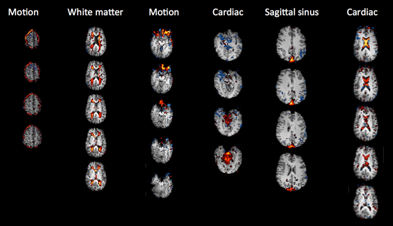
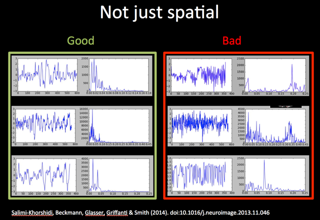

This is the version of the FSL practical adjusted for use in PYM0FM, to be used on the CINN Nutanix Platform. Consequently, there are a few things you need to keep in mind:
- The data is not stored in your home folder (~/fsl_course_data), and instead it is stored in the shared pym0fm drive, located at
/storage/silver/pym0fm/<your DTS login>/fsl_course_data. - We are using virtual machines that are preconfigured for neuroimaging work. Our researchers typically use both FSL verion 5 and 6, and to avoid conflict we are containing version of the software in modules. When you start a new terminal session, whether you start a new analysis, or you just closed one terminal, you will have to type
module load fsl6.0, each time.
ICA and Dual Regression Practical
Independent Component Analysis (ICA) is a tool that we can use to decompose FMRI data into spatially independent components, with each component represented by a spatial map and a time course.
We can use ICA at the single subject level to separate out true neuronal signal from noise, and use ICA at the group level to identify whole brain resting state networks (RSNs) that are common across the group.
Melodic is the tool in FSL that we use at both the subject and group level to decompose FMRI data into time-courses and spatial maps using ICA.
Dual regression is a tool that we can use as part of a group-level resting state analysis to identify the subject-specific contributions to the group level ICA. The output of dual regression is a set of subject-specific spatial maps and time courses for each group level component (spatial map) that can be then compared across subjects/groups.
Contents:
- Running single-subject ICA
- Setting up and running ICA at the single-subject level.
- Classifying and removing noise components from single-subject ICA
- Manual and automated classification of ICs as signal or noise.
- Registering cleaned single-subject data to the standard space
- Aligning clean data to a common space ready for group level analysis
- Running Group ICA
- Setting up and running temporal concatenation group ICA.
- Low versus high dimensional group ICA
- Looking at how the ICA dimensionality (number of components) affects the results.
- Using dual regression to investigate group differences
- Estimating group level ICs, and comparing ICs across groups.
Running single-subject ICA
Preparing for the single-subject ICA
Just like with task-fMRI, before you can run single-subject resting-state analysis you first need to prepare the necessary images:
- Brain-extract the structural T1 image (e.g. with
BET) to use for registration - Brain-extract the magnitude fieldmap image (e.g. with
BET) - Convert the fieldmap phase image to units of rad/s (using
fsl_prepare_fieldmaps). See the Registration Practical for further details.
Single-subject ICA via the MELODIC GUI
MELODIC has a simple GUI that has been structured to be similar to the FEAT GUI. The MELODIC GUI will allow you to apply the necessary pre-processing and ICA options.
Take a look at an example data directory:
cd /storage/silver/pym0fm/<your DTS login>/fsl_course_data/rest/ICA/single_subject/CON_417
To set up the preprocessing and single-subject ICA, you would load in the following images (just as for task fMRI):
- Data - 4D data: Resting 4D functional image
- Registration - Main structural image: Brain-extracted T1
- Pre-stats - B0 unwarping: B0 fieldmap in rad/s (if using fieldmaps)
- Pre-stats - B0 unwarping: B0 brain-extracted magnitude image (if using fieldmaps)
- Pre-stats - Alternative reference image: high-contrast alternative reference volume
Can you identify the files listed above in the folder? Check your answer here
Open the Melodic GUI (Melodic_gui from MacOS) to see the similarity to the Feat GUI.
Click through the GUI and enter each of the images in the right place. Check with a tutor if you are not sure.
The recommended Pre-processing and Registration choices for single-subject resting-state analysis
are largely the same as for task-fMRI, e.g. use MCFLIRT motion correction and FNIRT
for non-linear registration(Note: You can find the additional information in B0_unwarping_info.txt. Leave other options as default).
However, the following pre-processing choices should be considered when running
single-subject ICA:
- Spatial smoothing: You may or may not wish to apply spatial smoothing before running ICA. This decision is largely based on data quality - if you have a small voxel size, e.g. HCP-style data, you may not want to apply smoothing to preserve spatial detail. Also, since the statistical analysis we will use is non-parametric, we don't need to apply spatial smoothing to increase gaussianity (and meet the assumptions required by Gaussian Random Field theory), like we did for task-fMRI.
- High-pass filtering: Since we don't have a model of the signal we expect to see in the data, we only want to remove slow drifts. Also, resting state signal is low frequency, mostly between 0.01-0.1 Hz, so we want to remove frequencies only below 0.01 Hz (corresponding to a period of 100 s).
Running the ICA
Feat GUI by selecting Preprocessing from the top right drop-down list and selecting MELODIC ICA data exploration in the Pre-stats tab.
This will run single-subject ICA with automatic dimensionality estimation.
Unlike for other FSL tools, the melodic command line is NOT equivalent to the GUI.The command line only performs ICA decomposition, while running MELODIC via the GUI will
call different preprocessing steps and then use the melodic (command line) tool to perform ICA decomposition.
Similarly, the FEAT GUI runs preprocessing and then can calls melodic command line to perform ICA decomposition. Also, note that the MELODIC GUI only allows you to change the basic options for ICA decomposition.
To set the GUI to run a single-subject ICA, go to the Stats tab and select Single-session ICA from the dropdown list. You can also choose whether to Variance-normalise the timecourses and whether to use Automatic dimensionality estimation. Leave them both on as default.
For single-subject ICA, the Post-stats tab can be left as default (Post-stats options do not affect the output of single-subject ICA, only the rendering of images in the report.html).
As the preprocessing and single-subject ICA would take too long to run in the practical today, just Save the settings in an .fsf file in the working directory. We have already run all the single-subject ICA on the data you will use for the rest of the practical.
Output of MELODIC single-subject ICA
We have run single-subject ICA via the FEAT GUI for you on a set of 12 subjects,
including six patients with a tumour (/storage/silver/pym0fm/<your DTS login>/fsl_course_data/rest/ICA/TUM_???) and six healthy controls
(/storage/silver/pym0fm/<your DTS login>/fsl_course_data/rest/ICA/CON_???). We are grateful to Natalie Voets for providing the datasets.
Change directory to look at the content for one of these subjects
(e.g. /storage/silver/pym0fm/<your DTS login>/fsl_course_data/rest/ICA/CON_425/CON_425_resting.feat/)
Many of the output images will be familiar from task-fMRI analysis, e.g. example_func.nii.gz,
design.fsf and report.html.
Please note: These single-subject data have already been 'cleaned'
(explained in the next section).
The filtered_func_data_clean.nii.gz and labels.txt
files are NOT automatically generated in the single-subject ICA.
The output from single-subjet ICA is the /filtered_func_data.ica directory. Go into the /filtered_func_data.ica directory and look at the
contents.
The key output in this directory is the melodic_IC.nii.gz, which is a 4D image where each volume
is a component generated in the single-subject ICA.
Classifying and removing noise components from single-subject ICA
The primary purpose of running single-subject ICA is to clean the single-subject data,
by identifying and removing components relating to artefacts (e.g. motion, physiological noise).
Among the filtered_func_data.ica/melodic_IC.nii.gz components
we want to identify those relating to noise and remove them from the pre-processed 4D resting fMRI data (filtered_func_data.nii.gz)
to produce a 'clean' version of the preprocesed data
(filtered_func_data_clean.nii.gz). This process can be done
manually or using an automated method. In this section you will
learn how to do it in both ways.
Manual IC classification
In this part of the practical you are going to label ICA components as either signal or noise.
To do this you need to look carefully at three pieces of information for each component: 1) the spatial map, 2) the time course, and 3) the power spectrum of the time course. Take a look at the example spatial maps, time courses and power spectra for 'good' (signal) and 'bad' (noise) shown in the Figure below (the spatial maps shown are all noise components).
 To get an understanding of the influence of data quality and quantity on the performance of ICA, you are going to take a look at two examples - one using multi-band data, one using non-multiband EPI data. We will use FSLeyes in Melodic mode to simultaneously show the spatial map, time course and power spectrum for each component.
cd /storage/silver/pym0fm/<your DTS login>/fsl_course_data/rest/ICA/IC_classification
Manual labelling of multi-band fMRI
In the first example, we have provided the components from a single-subject ICA run via the FEAT GUI on a 15-minute run of multiband data. No smoothing was applied during preprocessing.
First, load the Rest_MB6.feat/design.fsf in the FEAT GUI to see how
the single-subject preprocessing and ICA was run for this subject.
Close the FEAT GUI and open the single-subject ICA output in FSLeyes:
fsleyes --scene melodic -ad Rest_MB6.feat/filtered_func_data.ica &
Load the labels.txt file from the Rest_MB6.feat directory
(it will show a message saying the label file does not refer to the melodic directory,
which is because we renamed it - click on Apply the labels to the current overlay).
You will now see labels for all the components except for ten which are labeled as Unknown
(in yellow).
Please have a look at the 10 Unknown components and label each one as either Unclassified
noise or as Signal (note that FSLeyes allows you to include more informative labels if you wish).
Once you have classified all of the components, please save your results by overwriting the labels.txt file and close FSLeyes.
Manual labelling of EPI fMRI
In the second example, we have provided the components from a single-subject ICA run via the MELODIC GUI on an older EPI dataset that has fewer timepoints and bigger voxel size. Some smoothing has been performed during preprocessing of this dataset.
First, load the
Rest_EPI.ica/design.fsf in the MELODIC GUI to see how the single-subject
preprocessing and ICA was run for this subject.
Close the MELODIC GUI and open the single-subject ICA output in FSLeyes:
fsleyes --scene melodic -ad Rest_EPI.ica/filtered_func_data.ica &
Load the labels.txt file (inside
Rest_EPI.ica) in the same manner as
before, and classify the 10 Unknown components. Again, save the results by
overwriting labels.txt and close FSLeyes.
Removal of noise components with fsl_regfilt
You will now manually "clean up" the EPI data example by removing the components that you
classified as noise from your data. This is done using
fsl_regfilt, which will regress the time courses of the noise components from the data.
fsl_regfilt
explains what the command does: "Data de-noising by regressing out part
of a design matrix using simple OLS regression on 4D images". In our
case, what does the design matrix contain?To manually remove the noise components from the Rest_EPI.ica data, first we need to get a list of IDs of the noise components:
tail -1 Rest_EPI.ica/labels.txt
Now we can pass this list of numbers to fsl_regfilt (important: in the
command below, replace 1,2,3 with the output of the above
command, making sure to remove the square brackets from the terminal output and include the quotes '' in the command):
fsl_regfilt -i Rest_EPI.ica/filtered_func_data.nii.gz \
-d Rest_EPI.ica/filtered_func_data.ica/melodic_mix \
-o Rest_EPI.ica/filtered_func_data_clean.nii.gz \
-f "1,2,3"
Make sure you understand what each of the command's flags do. If not sure, check the help and/or ask a tutor.
In FSLeyes, open the original pre-processed data (Rest_EPI.ica/filtered_func_data.nii.gz) and the cleaned
pre-processed data
(Rest_EPI.ica/filtered_func_data_clean.nii.gz) and look at them in movie mode.
Automatic IC classification and noise removal
To avoid manual labelling of all the components for every single subject, tools have been developed to try automatically identify components that represent structured noise in fMRI data. We will take a look at two of these tools:
- FIX is an
automated classification algorithm that uses hand-labelled training data
to train a multi-level classifier to reliably label signal and noise
components in comparable novel datasets. There are already different
trained classifiers available, which can be used in case your data is
comparable to the data FIX has been trained on (both in terms of sequence characteristics and of preprocessing applied).
For optimal results it is recommended to retrain the classifier on your data.
Note that AROMA requires slightly different preprocessing options to be run on the data. See user guide for details.
- AROMA is an alternative to FIX that specifically aims to identify motion artefacts. It does not require classifier (re-) training across studies. It uses four theoretically motivated spatial and temporal features embedded in a simple and robust classifier, and has been shown to minimize the impact of motion while improving resting-state network reproducibility. If you are interested in more details, see the optional section at the end of the practical.
Now you are going to compare your own classification of signal and noise components for the EPI data to classifications done by FIX. If you are interested in comparing also the output from AROMA, see the optional section at the end of the practical.
FIX classified components
FIX has already been run on the Rest_EPI.ica data using the following command:
fix Rest_EPI.ica training.RData 30 -m
A key output of FIX is a .txt file that lists the classification of each component,
and provides a comma separated list of noise ICs at the bottom.
The name of the txt file is formatted as: fix4melview_‹training data›_thr‹threshold›.txt
Use the tail command to get a list of the components that were classified as noise
by FIX, and compare them against your own results (what you passed
to fsl_regfilt, above).
Click here to check the command to list the FIX-classified noise components.
Note that FIX automatically regresses out the noise components and produce the 4D cleaned data as part of the output (see the relative user guides for details), therefore there is no need to apply fsl_regfilt separately.
Registering cleaned single-subject data to the standard space
melodic command line on data already registered in standard space. The clean preprocessed 4D resting state data produced by the steps above (filtered_func_data_clean.nii.gz)
is still in the native subject space. In fact, the MELODIC/FEAT Registration settings at the single-subject level
only generate the transformations/warps necessary to align the functional data to the standard space without applying them.
Therefore, before moving on to the group analysis, the cleaned single-subject data needs to be aligned
to the standard space by applying the transformations/warps.
TUM_*) and controls (CON_*) inside /storage/silver/pym0fm/<your DTS login>/fsl_course_data/rest/ICA/ and align the filtered_func_data_clean.nii.gz to the standard space,
using the applywarp command:
Type applywarp to see the usage and work out how to run the
registration of the cleaned data to standard space for subject CON_417 using the
transformations/warps generated when running the single-subject
MELODIC. Don't actually run applywarp, but instead check your
answer by clicking here
To save us manually registering each of our tumour patients and controls we can use a simple script that processes all subjects simultaneously. For more details see the optional section at the end of this practical.
Running Group ICA
If you have applied cleaning at the single subject level (which is recommended!),
you currently cannot use the MELODIC GUI to run the group ICA, because the GUI would use the un-cleaned images.
Therefore, we need to use the melodic command line to run group ICA.
An example group ICA has been run before you using the following command (don't run this - it takes too long for this practical):
melodic -i input_files.txt -o groupICA15 \ --tr=0.72 --nobet -a concat \ -m $FSLDIR/data/standard/MNI152_T1_2mm_brain_mask.nii.gz \ --report --Oall -d 15
Type melodic into the terminal
and use the command usage to work out what each flag in the command above means.
How many group components will be generated in this analysis? Check your answer here
Output of group ICA
Change directory to /storage/silver/pym0fm/<your DTS login>/fsl_course_data/rest/ICA/groupICA15/ to look
at the output of the group MELODIC run with the command above.
The key output from the group MELODIC is the melodic_IC.nii.gz.
This is a 4D image where each volume corresponds to an ICA component.
This melodic_IC.nii.gz can be used as a group level template (spatial basis) to feed into dual regression (more on this later).
Low versus high dimensional group ICA
In this section, you will have a look at the melodic_IC components from example group ICAs run with low and high dimensionality.
Change directory into /storage/silver/pym0fm/<your DTS login>/fsl_course_data/rest/ICA/low_high_ICA_dim
We have run group ICA with 25 dimensions and with 50 dimensions for you, using the following commands:
melodic -i input_files.txt -o GroupICA_25_s0_n820_MB8_HCP \ --tr=0.72 --nobet -a concat \ -m $FSLDIR/data/standard/MNI152_T1_2mm_brain_mask.nii.gz \ --report --Oall -d 25
melodic -i input_files.txt -o GroupICA_50_s0_n820_MB8_HCP \
--tr=0.72 --nobet -a concat \
-m $FSLDIR/data/standard/MNI152_T1_2mm_brain_mask.nii.gz \
--report --Oall -d 50
You can compare the group ICA maps calculated with different dimensionalities (25 vs 50) by loading them in FSLeyes:
fsleyes -std \ melodic_IC_25_s0_n820_MB8_HCP.nii.gz -un -dr 30 100 -n 25 \ -cm red-yellow -nc blue-lightblue \ melodic_IC_50_s0_n820_MB8_HCP.nii.gz -un -dr 30 100 -n 50 \ -cm red-yellow -nc blue-lightblue &
Make sure that the two images are unlinked (that the buttons next to each image's name is toggled off).
Now go to the ‘View’ menu at the top and add a
second ortho view, so we can look at the 25 and 50 images
side-by-side. Next, make sure that the window on the left is showing
the 25 results (by clicking the  toggle button next to 50), and make sure that the window on the
right is showing the 50 results (by clicking the
toggle button next to 50), and make sure that the window on the
right is showing the 50 results (by clicking the  toggle button next to 25).
toggle button next to 25).
In the left view, select the 25 image, and change the volume control to 5. Then in the right view, select the 50 image, and look at volumes 32, 33 and 35. Make sure to navigate to somewhere inside the component (for example around voxel location 45 45 65). As you can see, the original network in the 25 dimensional ICA shown on the left of your screen is split into three separate components at a dimensionality of 50, namely a left and right lateralised and a medial region. Another example is to compare component 2 in the 25-dimensional decomposition to components 5, 9, 11 and 14 in the 50-dimensional decomposition.
Using Dual Regression to investigate group differences
A dual regression analysis is used to map the RSNs (i.e. group-level components or an external template or set of ROIs) back into
individual subjects data, e.g. in order to examine between-group difference
in the RSNs. We will use the group ICA generated from melodic in the section Running Group ICA as spatial basis to input into dual regression.
Dual regression works in three stages, each with its own output:
- Stage 1 - using group-ICA spatial maps, subject-specific time courses are estimated from the input standard space cleaned single-subject data (filtered_func_data_clean_standard.nii.gz); this step conducts a multivariate spatial regression
- Stage 2 - using the subject-specific time courses output from stage 1, subject-specific spatial maps are estimated from the input standard space cleaned single-subject data (filtered_func_data_clean_standard.nii.gz); this step conducts a multivariate temporal regression
- Stage 3 - using the subject-specific spatial maps estimated in stage 2 and the design matrix and contrast files, cross-subject (group) analysis is performed
Before running dual regression
Before we can run dual regression, we need to have:
- A list of single subject cleaned, preprocessed, 4D rfMRI data in standard space
- A set of RSNs that we want to estimate at the subject level
- A group level design to perform the required group comparisons
In the /storage/silver/pym0fm/<your DTS login>/fsl_course_data/rest/ICA/ directory, we have already created the inputlist_new.txt containing
the filepaths to each of our 6 controls and 6 tumour patients filtered_func_data_clean_standard.nii.gz.
We also have our group level components (/storage/silver/pym0fm/<your DTS login>/fsl_course_data/rest/ICA/groupICA15/melodic_IC.nii.gz) obtained in the section Running Group ICA
We just need to set up the group-level design to perform group comparisons. In this analysis, we want to compare resting-state connectivity between our six patients with a tumour and the six healthy controls using an unpaired t-test.
Use the Glm GUI to set up a group-level design with 4 contrasts to model the mean for controls,
the mean for patients, as well as con > pat and pat > con. The input directories containing the cleaned and registered
single-subject data are labelled CON_* for control subjects and TUM_* for patients
(take this naming into consideration when setting up your design).
Click here to check you have set up your design correctly, then save it.
Running dual regression
Type dual_regression into the terminal to see details of the command usage. Using the data prepared above (subject files' list, groupICA15/melodic_IC group ICA maps and design files), work out the command we used to run this dual regression. Click here to check the command you have come up with is correct.
As the dual regression analysis is too long to run in the practical session, we have already ran the dual regression
analysis for you.
The output is located in /storage/silver/pym0fm/<your DTS login>/fsl_course_data/rest/ICA/groupICA15.dr
Output of dual regression
Move back into the /storage/silver/pym0fm/<your DTS login>/fsl_course_data/rest/ICA directory.
Type ls groupICA15.dr into the terminal to view the output of the dual regression.
Viewing the results of dual regression
To view the results from the dual regression analysis, type the following into the terminal:
fsleyes -std groupICA15/melodic_IC \ -un -cm red-yellow -nc blue-lightblue -dr 4 15 \ groupICA15.dr/dr_stage3_ic0007_tfce_corrp_tstat3.nii.gz \ -cm green -dr 0.95 1 &
Make sure you are viewing the dr_stage3_* statistical map over the appropriate volume
of melodic_IC - set the volume of the melodic_IC
image to the same number of the IC shown in the randomise statistical image loaded (e.g dr_stage3_ic?????).
The difference between the two groups is very small (because we only had 12 subjects and therefore not much statistical power). To find the result, go to voxel location [63, 81, 54]. You may want to change the minimum threshold at the top to 0.9 to show the results at a slightly more lenient p-value.
What is the name of the file that I would need to look at if I were interested in contrast 2 for network 12? Check your answer here
tfce_corrp_tstat3 image that was
loaded was set to either 0.95 or 0.9. What do these values mean?A quick script that is useful for checking the maximum of every
1-p-value image across a set of dual regression stage 3 outputs is below. You
can try to run it on the dual regression output we provided you with
in groupICA15.dr. If the maximum value in any given image is not
above 0.95, you know that nothing survived thresholding:
cd groupICA15.dr
for i in dr_stage3_ic00??_tfce_corrp_tstat?.nii.gz ; do
echo $i `fslstats $i -R`;
done
You can also run randomise as a separate stage from dual regression. If you are interested in more details, see the optional section at the end of the practical.
The End.
(Optional) AROMA classified components
AROMA has also already been run on the Rest_EPI.ica data using the following command:
python2.7 ICA_AROMA.py \ -in filtered_func_data.nii.gz \ -out AROMA \ -mc mc/prefiltered_func_data_mcf.par \ -affmat reg/example_func2highres.mat \ -warp reg/highres2standard_warp.nii.gz \ -md filtered_func_data.ica
The output of AROMA is in a directory /AROMA, and the identified noise components are listed in a text file classified_motion_ICs.txt
Use the cat command to get a list of the components that were classified as noise
by AROMA, and compare them against your own results (what you passed
to fsl_regfilt).
Click here to check the command to list the AROMA-classified noise components.
Note that AROMA automatically regresses out the noise components and produce the 4D cleaned data as part of the output (see the relative user guides for details), therefore there is no need to apply fsl_regfilt separately.
(Optional) Scripting
To save us manually registering each of our tumour patients and controls, we can run the following simple script from /storage/silver/pym0fm/<your DTS login>/fsl_course_data/rest/ICA/ to process all subjects simultaneously.
#!/bin/sh
for j in `ls -d */*_resting.feat` ; do
applywarp -r ${j}/reg/standard.nii.gz \
-i ${j}/filtered_func_data_clean.nii.gz \
-o ${j}/filtered_func_data_clean_standard.nii.gz \
--premat=${j}/reg/example_func2highres.mat \
-w ${j}/reg/highres2standard_warp.nii.gz
done
ls -1 */*_resting.feat/filtered_func_data_clean_standard.nii.gz >> inputlist_new.txt
The output of this script will be a standard space clean preprocessed 4D resting image for each subject (filtered_func_data_clean_standard.nii.gz)
as well as a txt file (inputlist_new.txt), which contains a list of the filepaths to the filtered_func_data_clean_standard.nii.gz for each subject.
This list is necessary for running the group ICA and the dual regression, which will be covered in the next practical.
The registration script above is also saved in the /storage/silver/pym0fm/<your DTS login>/fsl_course_data/rest/ICA/optional_script.sh
directory. You can run it by typing (don't do this now, it takes around 20 mins to run):
sh ./optional_script.shBack to main practical
(Optional) Running dual regression and randomise separately
The standard dual_regression command automatically runs randomise to perform between-group statistical comparisons for *every* component
that is input to dual regression, *when provided with a design*. However, you can also run stage 1 and 2 of dual regression only and
separately run randomise after dual regression has finished.
You may want to do this if you need to run a different test on the same data (avoiding re-calculating the single-subject maps), have more controls over randomise options, or if you are interested in running the statistical analysis only on one or a subset of RSNs (avoiding running tests on all the components).
Type dual_regression into the command line to recap the usage and work out how would you change the command you used above to run only stage 1 and stage 2 of dual regression.